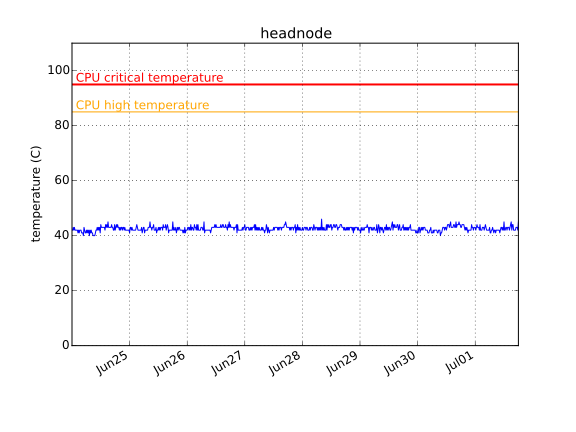
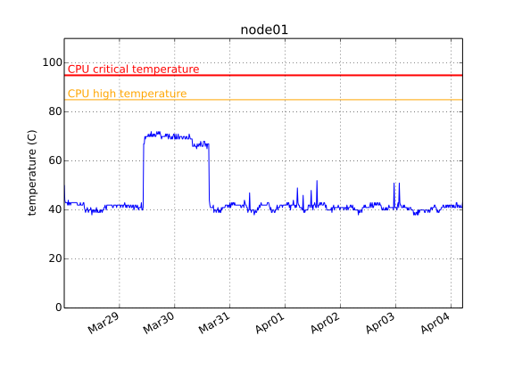
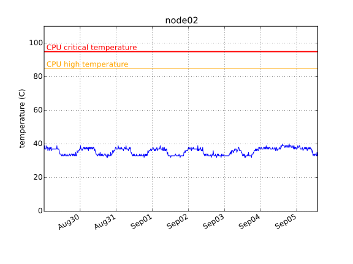
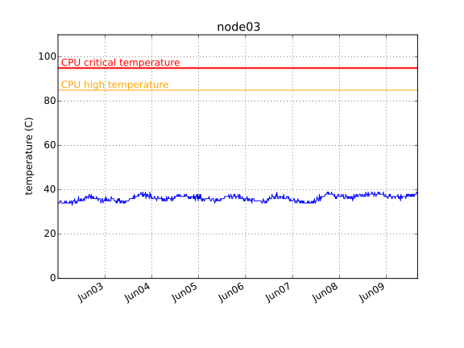
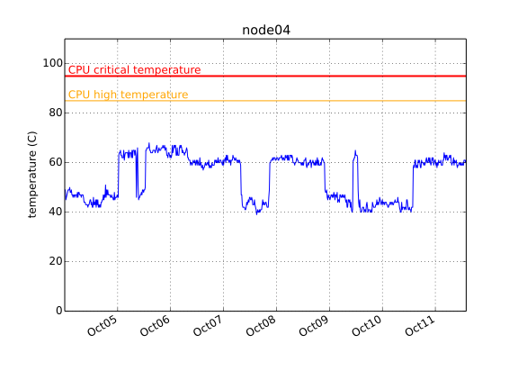
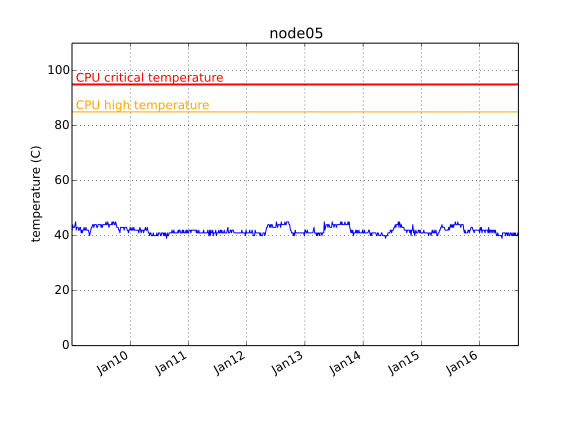
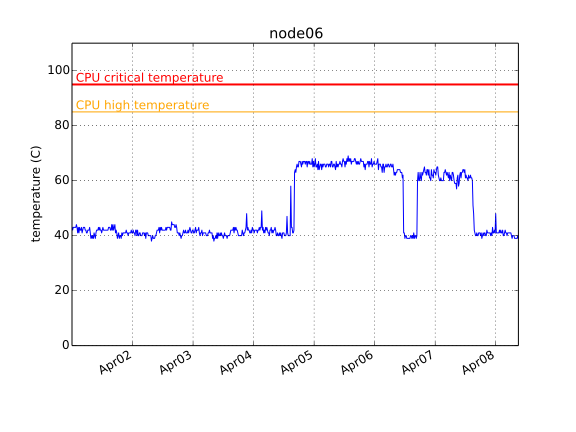
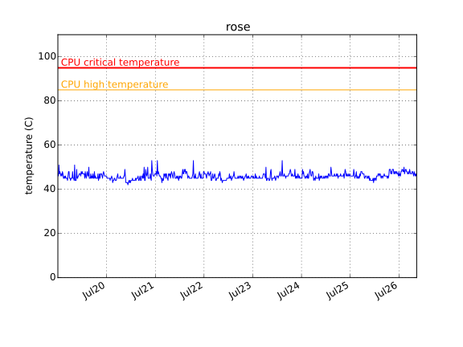

2014-12-15 11:00
| host name | disk | time checked | overall health | power_on hours | pre-fail symptons |
|---|---|---|---|---|---|
| headnode | /dev/sda | Mon Dec 15 03:00:01 2014 PST | PASSED | 9217 | NONE (Raw_Read_Error_Rate = 0. Reallocated_Sector_Ct = 0. ) |
| headnode | /dev/sdb | Mon Dec 15 03:00:01 2014 PST | PASSED | 6899 | NONE (Raw_Read_Error_Rate = 0. Reallocated_Sector_Ct = 0. ) |
| headnode | /dev/sdc | Mon Dec 15 03:00:01 2014 PST | PASSED | 3370 | NONE (Raw_Read_Error_Rate = 0. Reallocated_Sector_Ct = 0. ) |
| headnode | /dev/sdd | Mon Dec 15 03:00:01 2014 PST | PASSED | 4611 | NONE (Raw_Read_Error_Rate = 0. Reallocated_Sector_Ct = 0. ) |
| headnode | /dev/sde | Mon Dec 15 03:00:01 2014 PST | PASSED | 4614 | NONE (Raw_Read_Error_Rate = 0. Reallocated_Sector_Ct = 0. ) |
| node01 | /dev/sda | Mon Dec 15 03:00:01 2014 PST | PASSED | 9451 | NONE (Raw_Read_Error_Rate = 0. Reallocated_Sector_Ct = 0. ) |
| node02 | /dev/sda | Mon Dec 15 03:00:01 2014 PST | PASSED | 9354 | NONE (Raw_Read_Error_Rate = 0. Reallocated_Sector_Ct = 0. ) |
| node03 | /dev/sda | Mon Dec 15 03:00:01 2014 PST | PASSED | 9351 | NONE (Raw_Read_Error_Rate = 0. Reallocated_Sector_Ct = 0. ) |
| node04 | /dev/sda | Mon Dec 15 03:00:01 2014 PST | PASSED | 2725 | NONE (Raw_Read_Error_Rate = 0. Reallocated_Sector_Ct = 0. ) |
| node05 | /dev/sda | Mon Dec 15 03:00:01 2014 PST | PASSED | 1153 | NONE (Raw_Read_Error_Rate = 0. Reallocated_Sector_Ct = 0. ) |
| node06 | /dev/sda | Mon Dec 15 03:00:01 2014 PST | PASSED | 1528 | NONE (Raw_Read_Error_Rate = 0. Reallocated_Sector_Ct = 0. ) |
2014-07-24: node05 goes online
2014-07-20: Data is missing between July 18 and 20 due to power outage, causing the weirdly looking straight line in this time interval.
       